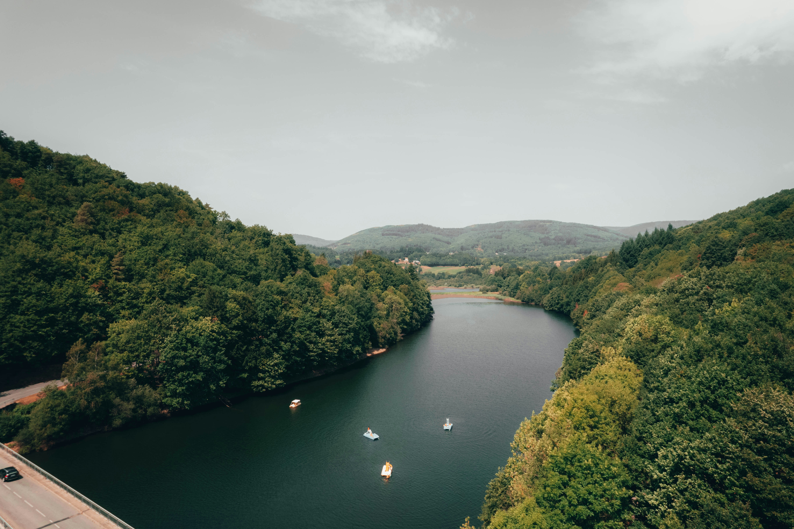
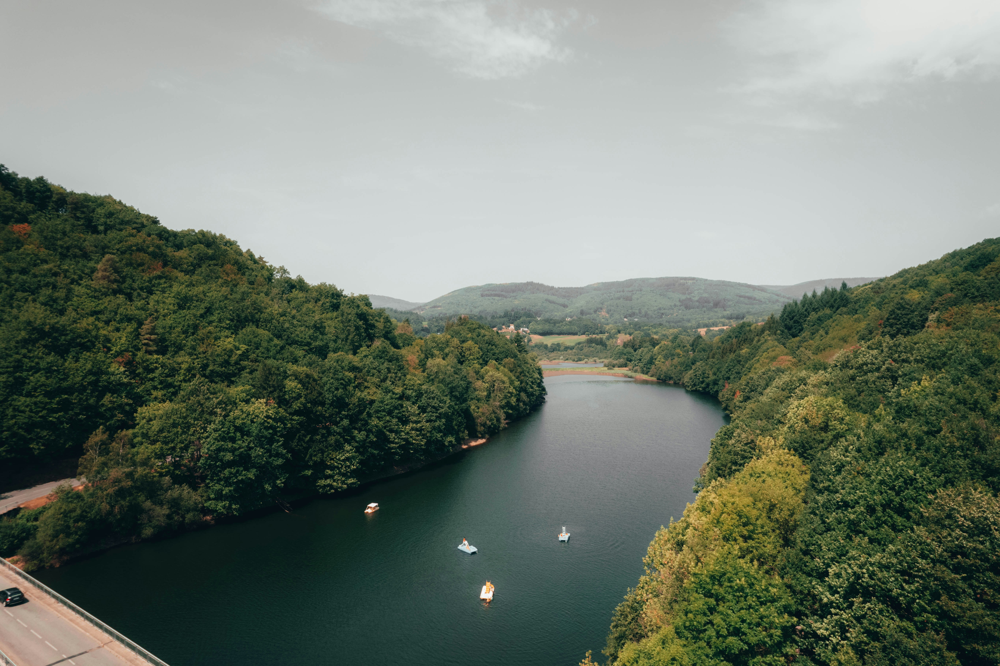

Popular Destinations
From the neon-lit streets of Tokyo to the ancient, sun-baked ruins of Greece, Riverman Travels brings the entire world to your doorstep. Our global network spans over 500 destinations across seven continents, ensuring that whether you seek the serenity of a tropical rainforest or the adrenaline of a rugged mountain trek, we have the perfect itinerary waiting for you. We don't just point you toward a map, we provide local expertise and hand-picked accommodations in every corner of the globe, turning distant dreams into your next great reality. Following Destinations are the hottest place to go in this time around the year
Trending Now: These hand-picked gems are currently our most sought-after escapes. Whether you are chasing the golden hour in the Mediterranean or seeking the tranquil first light of a Kyoto sunrise, these are the world's most vibrant destinations for this season. Discover why these iconic locations are at the top of every traveler's bucket list right now.
- Santorini, Greece
- Kyoto, Japan
- Bali, Indonesia
- Swiss Alps, Switzerland
- Reykjavik, Iceland


 
